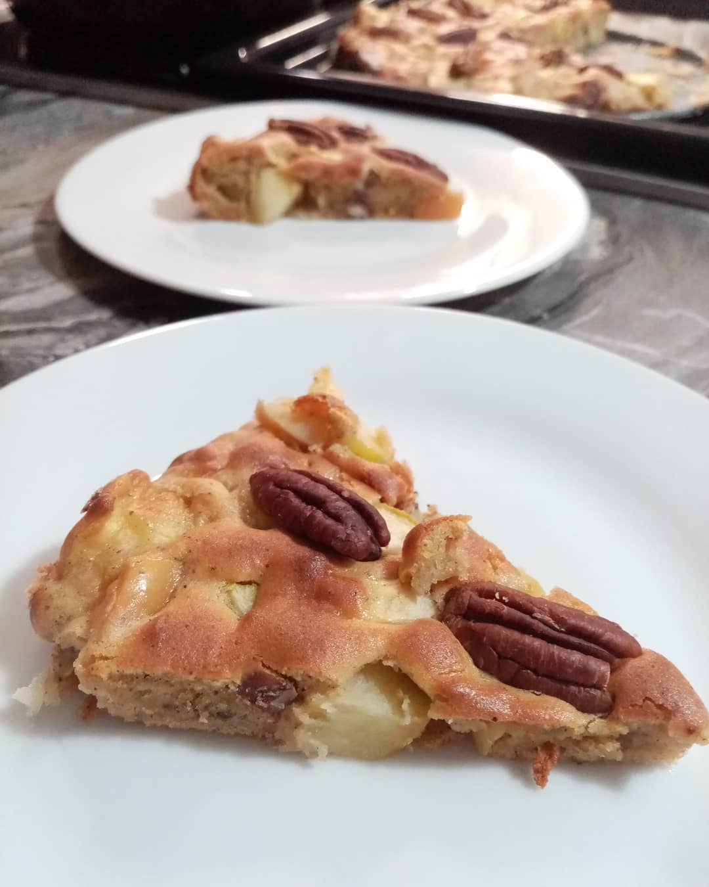

Nedělní jablečný koláč s pekanovými ořechy 🥧🤗
-1 vajíčko
- 50g xylitolu
- 2 odměrky F1 vanilka-smetana
- 40g polohrubé mouky
- 1/3 lžičky prášku do pečiva
- 30ml mléka nebo vody
- 30ml kokosového oleje
- skořice
- 2 jablka 🍎🍏
- pekanové ořechy
Nejdřív ušlehat vajíčko s xylitolem, potom přidat všechny ostatní ingredience 🤗 jablka na kostičky a nasekané ořechy vmíchat až nakonec 😊 pekla jsem v dortové formě o průměru 22cm 👍 ve vyhřáté troubě na 180° asi 20 minut ⏰ nejlepší je ještě teplý 🥧
#kolac #pie #applepie #applepierecipe #recipes #recipe #recipeoftheday #recipeshare #recipeideas #healthyrecipes #healthyrecipe #healthylifestyle #healthyfood #healthy #fitness #fit #fitnesslife #fitnessrecipes #fitnessrecepty #fitrecepty #fitrecept #jablkovykolac #jablecnykolac #recepty #recept #zdraverecepty #zdravedezerty #zdravejidlo #dezert #dessert